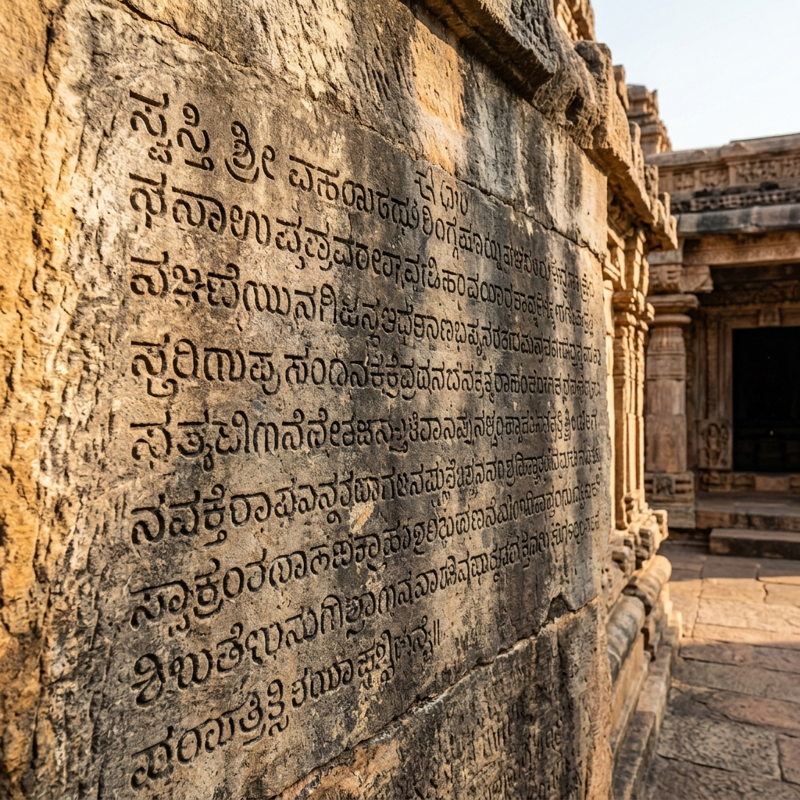

Battle of Pullalur Explorer
Journey to the ancient plains of northern Tamil Nadu. Uncover the strategic military clash where the Western Chalukya Emperor Pulakeshin II defeated the Pallava King Mahendravarman I, triggering a century-long struggle for supremacy.
The Vatapi Invasion of the Pallava Empire
By the early 7th century, Emperor Pulakeshin II of the Western Chalukya Dynasty had established himself as the undisputed sovereign of the Deccan. Seeking to expand his hegemony further south, he launched a massive invasion of the prosperous Pallava kingdom of Kanchi, crossing the Krishna River and annexing Vishnukundina territories along the way.
The Pallava king Mahendravarman I mobilized his army to intercept the advancing Chalukya forces. The two powers clashed at Pullalur, a strategic village situated just 25 kilometers north of the Pallava capital of Kanchipuram, setting the stage for a dramatic conflict of early medieval military strategies.
🏛️ At a Glance
- Combatants: Western Chalukyas of Vatapi vs. Pallavas of Kanchi.
- Location: Pullalur (Kanchipuram district, Tamil Nadu).
- Outcome: Decisive Chalukya victory.
- Significance: Sparked the historic 100-year Chalukya-Pallava wars.
Sovereigns of the Battle
The commanders at Pullalur were two of the most celebrated royal figures in early medieval Indian history.
Pulakeshin II
The legendary Western Chalukya Emperor, famous for defeating Harshavardhana on the Narmada and establishing Vatapi as a supreme military superpower.
Mahendravarman I
The Pallava King of Kanchi. A great patron of rock-cut temple architecture, literature (author of Mattavilasa Prahasana), and defender of Kanchi.
Strategic Outflanking
Pulakeshin II used fast-moving cavalry divisions to bypass the Pallava frontier garrisons, forcing Mahendravarman to fight close to his capital.
📈 Strategic Impacts
- Battle Winner: Pulakeshin II annexes northern Pallava provinces.
- Fortification Siege: Pallava forces retreat behind Kanchipuram's high stone walls.
- Vatapi Supremacy: Chalukya empire reaches the peak of its early power.
- Seeds of Revenge: Sowed the seeds of Narasimhavarman I's retaliatory raid on Vatapi in 642 CE.
The Century-Long Vendetta Begins
The battle on the plains of Pullalur ended in a heavy defeat for the Pallava forces. Mahendravarman I and his remaining soldiers were forced to retreat behind the fortified walls of Kanchipuram. While Pulakeshin II successfully plundered the northern territories, he was unable to breach Kanchi's defences and eventually marched further south before returning to Vatapi.
The humiliation at Pullalur was deeply felt by the Pallavas. It initiated a century-long, cyclic military struggle between the two empires, culminating decades later when Mahendravarman's son, Narasimhavarman I, sacked and burned the Chalukya capital of Vatapi.
Chronology of the Chalukya-Pallava Feud
Follow the timeline of events that defined the early medieval Deccan rivalry.
Coronation of Pulakeshin II
Ascends the Vatapi throne and consolidates power over Western India and Maharashtra.
The Southern March
Pulakeshin II launches an expansion campaign, crossing the Krishna River and invading the Pallava frontier.
The Battle of Pullalur
The Chalukya legions defeat Mahendravarman I at Pullalur, driving the Pallavas behind Kanchipuram's walls.
The Sacking of Vatapi
Pallava king Narasimhavarman I invades the Deccan, kills Pulakeshin II, and plunders the Chalukya capital in revenge.
Relics of the Southern Empires
Explore the stone inscriptions and temple carvings that commemorate the kings.

Aihole Meguti Inscription
The stone wall tablet detailing Chalukya campaigns and victories.

Kanchipuram War Reliefs
Sandstone carvings of early medieval Pallava army divisions and fortifications.
Battlefield Plains
The ancient agricultural plains where the clash for Kanchi took place.
📚 References & Further Reading
- Ravikirti (634 CE). The Aihole Inscription of Pulakeshin II. Meguti Temple Records.
- Nilakanta Sastri, K. A. (1955). A History of South India. Oxford University Press.
- Ramesh, K. V. (1984). Chalukyas of Vatapi. Agam Kala Prakashan.
- Archaeological Survey of India (N.D.). Inscriptions of the Pallavas and Kailasanathar reliefs.